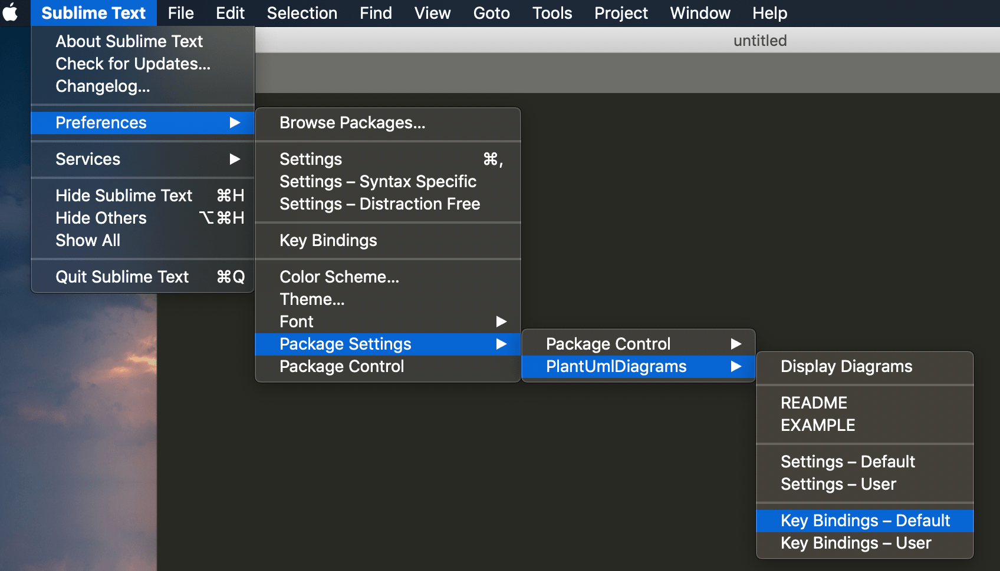
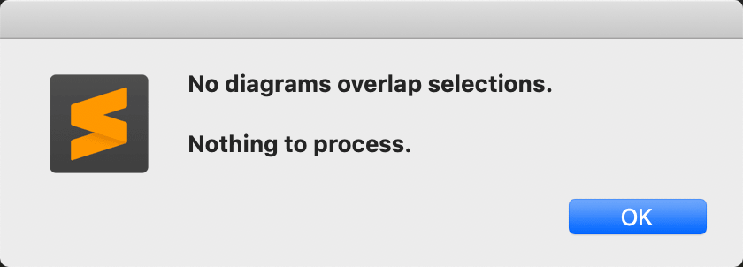
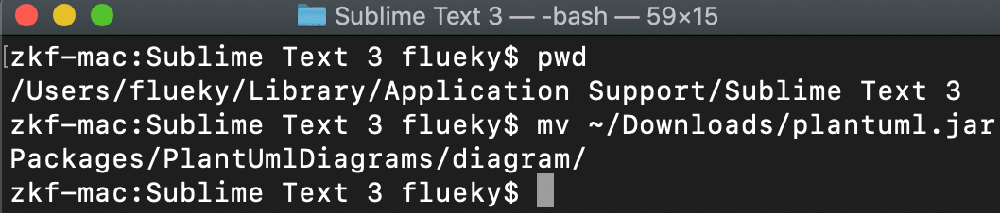
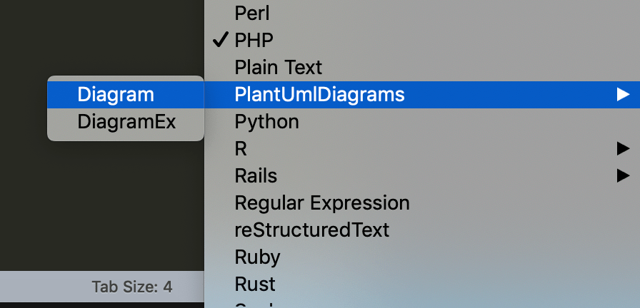
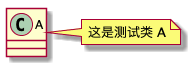
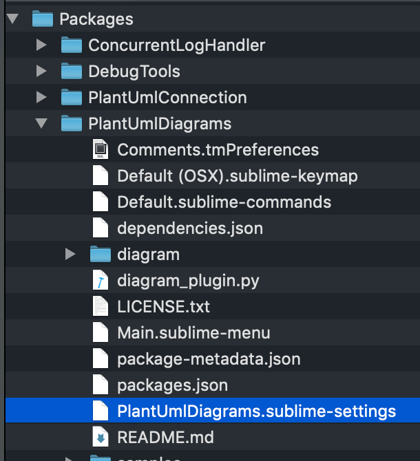

Sublime安装PlantUML插件
1 安装 graphviz
Graphviz的是AT&T Labs Research开发的图形绘制工具,他可以很方便的用来绘制结构化的图形网络,支持多种格式输出,生成图片的质量和速度都不错。（摘自百度百科）
Mac 安装 graphviz只需一条命令。
brew install graphviz
2 安装Sublime Text
笔者使用的文本编辑工具比较多。VScode、Atom、Sublime、UltraEdit。其实都没有掌握太高深的用法，只觉得哪个好用就用哪个。
下载地址见官网。
3 安装PlantUml
这其实是一个支持安装Sublime的插件,支持VScode等其他文本编辑工具。
打开Package Control，输入install
选中Install Package后，在新页面输入plantuml。
点击PlantUMLDiagrams进行安装。
4 配置快捷键
安装后，配置好快捷键，按照图中步骤，配置默认快捷键。
粘贴以下内容，将可以使用command+m快捷键显示UML图片。
[
{"keys": ["super+m"], "command": "display_diagrams"}
]
5 添加依赖jar
切记，最后一步，需要指定plantuml.jar，不然将生成不了最终的UML效果图片。
并提示:No diagrams overlap selections.Nothing to process。
plantuml.jar下载地址。
将下载下来的jar文件复制到**Application Support/Sublime Text 3/Packages/PlantUmlDiagrams/diagram/**目录下
6 设置语法高亮
在页面右下角，选择需要高亮的语法，推荐PlantUmlDiagrams->Diagram。
7 验证
1 | @startuml |
复制上面的内容，command+m生成下面的图片。
注：*针对中文乱码的情况，可以添加utf-8编码支持。
修改标记的文件最后一行"charset": null 为 "charset": "UTF-8"。
觉得有用？那打赏一个呗。[去打赏](/donate/)
All articles in this blog are licensed under CC BY-NC-SA 4.0 unless stating additionally.